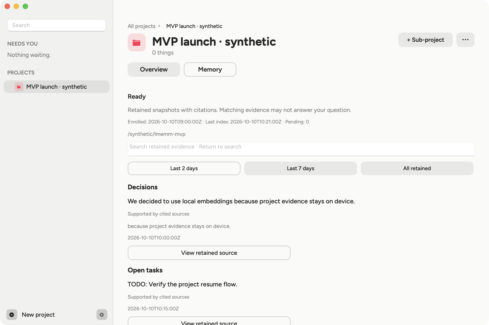

PROJECT NOTESKeep the free tier.
Keep the free tier.
Give people room.
Something to come back to.
A LITTLE LESS TO KEEP IN YOUR HEAD
All those tabs. That half-finished thought.
The reason you chose one thing over another.
A clearer way back to what matters.
Something to come back to.
“Let’s keep the free tier.
Give people room to try it.”
Validate the pricing proposal
Compare the saved references
A tab at nine. A note at eleven. A message you meant to answer. Work scatters across a dozen places, and none of them remembers the others.
Trace notices what belongs together: the notes, the research and the draft. Then it quietly ties them into one project.
The decision and the thinking behind it stay with the project, with the original source one click away.
Tomorrow morning, or after a long weekend, open the project and you are already back in it. No digging, no rebuilding.
People, papers, half-made plans. Trace keeps the thread through the blur.
One project, three ways back in.
Pick a question and see.
The decision, and the note it came from.
Illustrative exampleGo from a decision to the exact words behind it. Try the highlighted button.
Every decision links back to where it came from. Select the highlighted button in the screenshot.

THE CONCEPT FILM
A little less to keep in your head.
The idea behind Trace, in 43 seconds.
A CLEARER PICTURE
Screen access is a big ask. Here’s what Trace uses it for, what it keeps, and when anything leaves your Mac.
Try the controls. This is a preview; it doesn’t access your screen, microphone, or apps.
Keep the free tier so people can try it.
“Remember to check the proposal.”
Voice becomes a written note.The latest beta reads individual images of an allowed foreground window to recognize your work. It does not record continuous screen video.
A small, hands-on macOS beta. Try Trace in your day, share what helps and what gets in the way, and help shape what comes next.
Early access starts with one person on one Mac. Shared team memory is not available yet.
For your work, your studies,
and the projects you’re not done with yet.